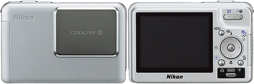

Nikon Coolpix S2
May 18, 2005 | Comments (0)
Nikon has announced the S2, a companion camera to the recently released S1. A few images of the camera we’re already floating around on the internet. The camera is a bit heavier and is rain proof. For the rest it is mostly the same as the S1 — including the large 2.5” display. It is not interesting for me as it is only available in silver.
“Those are my principles. If you don't like them I have others.” — Groucho Marx (1895-1977)
Copyright © 2003-2007 Janco Tanis. All rights reserved.
XHTML, CSS, RSS feeds. Powered by Movable Type. Hosted @Home with a domain by hostway.
XHTML, CSS, RSS feeds. Powered by Movable Type. Hosted @Home with a domain by hostway.
Comments
Nice, not for the camera itself, just for Nikon: is nice to see they keep working and surprising us. Sure this will be a very good product or at least it will help to win presence in the shelves. Remember that everything that is good for Nikon is good for all of us since we need competition to get cameras better and cheaper, so I hope they have success with this new model.
Well, I still prefer the S1 over this new camera but not for the color like you Janco, just because I think I can get more just buying the S1 and then the waterproof case WP-CP5 that will give more protection and the option for underwater photography. The S1 will be bigger with the housing, but I can let it at home when not needed...